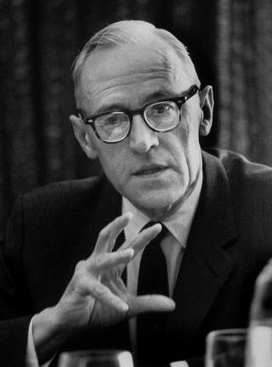

1902–1977
Austrian-American
Economics, game theory
Oskar Morgenstern was born in Görlitz, Silesia (then Germany), and grew up in Vienna. He studied economics at the University of Vienna and quickly rose through the Austrian academic establishment, becoming director of the Austrian Institute for Business Cycle Research in 1931. When Germany annexed Austria in 1938, Morgenstern was visiting the United States and chose not to return. He joined Princeton University, where a fateful collaboration began.
At Princeton, Morgenstern met John von Neumann, and the two discovered a shared conviction: that economics needed the rigour of mathematics. Their collaboration produced Theory of Games and Economic Behavior (1944), a 600-page treatise that established game theory as a mathematical discipline and introduced the expected utility axioms that now underpin virtually all of decision theory. Morgenstern provided the economic intuition and motivation; von Neumann supplied the mathematical machinery.
Though von Neumann often receives the lion's share of credit, Morgenstern's contribution was essential. He had been thinking about strategic interdependence in economics — where one agent's optimal action depends on what others do — long before their meeting. His earlier critique of perfect foresight in economics anticipated the core problem that game theory addresses. Morgenstern spent the rest of his career at Princeton and later at New York University, where he worked on applied game theory and operations research until his death in 1977.
| Phase | Page | Referenced for |
|---|---|---|
| Phase 15 | Zero-Sum Games and the Minimax Theorem | Co-authored Theory of Games and Economic Behavior with von Neumann (1944) |
| Phase 15 | Dominant Strategies and Iterated Elimination | Von Neumann and Morgenstern's game theory textbook |